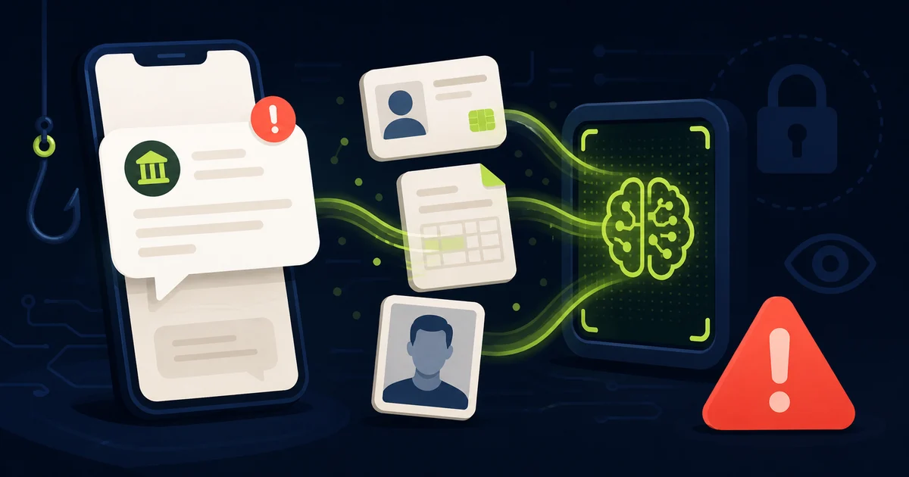

In breve
Non caricare documenti dal collegamento ricevuto via SMS.
L’11 agosto 2026 CERT-AGID ha segnalato un aumento degli SMS fraudolenti che imitano INPS. Il messaggio chiede di controllare i propri dati per garantire la continuità dei servizi e porta a un sito contraffatto. La procedura raccoglie dati anagrafici, documenti d’identità, buste paga, CUD e selfie.
Fonte istituzionale controllata. La campagna e il funzionamento del controllo tramite IA sono documentati dal CERT-AGID.
Come funziona la nuova truffa
Lo smishing è un tentativo di phishing inviato tramite SMS. In questo caso il messaggio usa il nome e la grafica di INPS e invita la persona a verificare i dati per evitare problemi con l’erogazione dei servizi.
Il collegamento apre un portale falso che riproduce l’aspetto di una procedura istituzionale. Il percorso è diviso in cinque fasi e richiede progressivamente informazioni sempre più delicate: dati anagrafici, documenti identificativi, buste paga, CUD e un selfie.
Perché l’intelligenza artificiale la rende più convincente
Il sito non si limita a ricevere i file. Secondo le prove svolte dal CERT-AGID, un sistema di visione artificiale descrive ciò che compare nell’immagine e verifica se corrisponde al tipo di documento richiesto. Per esempio, può rifiutare la foto di un oggetto perché non è un documento.
Questa verifica non dimostra che la procedura sia autentica. Serve ai criminali per scartare caricamenti inutili e, nello stesso tempo, fa percepire alla vittima un processo più rigoroso. Il controllo non è nemmeno una verifica di validità: nei test ha accettato anche una carta d’identità chiaramente contrassegnata come facsimile.
I segnali da riconoscere
- Minaccia la sospensione dei servizi. La paura di perdere una prestazione spinge a completare la procedura senza controllare.
- Il percorso inizia da un SMS. Il collegamento ricevuto non è una prova che la comunicazione provenga da INPS.
- Chiede molti documenti insieme. Documento, CUD, buste paga e selfie formano un insieme di informazioni estremamente sensibile.
- Mostra una “verifica IA”. Un controllo tecnologico può essere inserito anche in un sito criminale e non certifica l’identità di chi lo gestisce.
- L’indirizzo non termina con inps.it. Controlla il dominio reale, non il logo o le parole inserite nel resto della pagina.
Come controllare senza correre rischi
Non aprire il collegamento
Chiudi il messaggio e non rispondere. Non caricare immagini di prova: anche un file apparentemente innocuo può contenere informazioni.
Accedi direttamente a INPS
Digita inps.it nel browser oppure usa l’app ufficiale. Eventuali richieste o comunicazioni personali vanno controllate dall’area riservata.
Usa soltanto recapiti ufficiali
Se hai dubbi, cerca il Contact Center o la sede competente sul sito INPS. Non chiamare numeri presenti nell’SMS sospetto.
Hai già caricato documenti o selfie?
- Interrompi subito la procedura: non aggiungere altri file e non rispondere a eventuali contatti successivi.
- Conserva le prove: salva lo screenshot dell’SMS, il numero del mittente, l’indirizzo del sito e l’orario, senza tornare a interagire con la pagina.
- Segnala l’accaduto: se hai fornito copie complete di documenti, valuta una segnalazione alla Polizia Postale. La documentazione potrà essere utile in caso di successivi abusi.
- Fai attenzione ai contatti mirati: chi possiede quei dati può usarli per telefonate o messaggi molto credibili. Non comunicare password, codici OTP o dati bancari.
- Hai inserito anche credenziali: cambiale accedendo dal servizio ufficiale e controlla l’attività dell’account interessato.
Come segnalarla
Puoi inoltrare il messaggio sospetto a malware@cert-agid.gov.it e usare il portale ufficiale della Polizia Postale. Non inviare pubblicamente documenti, password o altri dati personali raccolti durante la truffa.
Trasparenza
Fonti verificate
Aggiornamenti e correzioni
Nessuna correzione al momento. Per segnalare un errore scrivi a redazione@hackerino.it.
Aiuta la redazione
Hai ricevuto questo SMS?
Puoi inviarci una segnalazione senza allegare documenti, selfie o altri dati riservati.